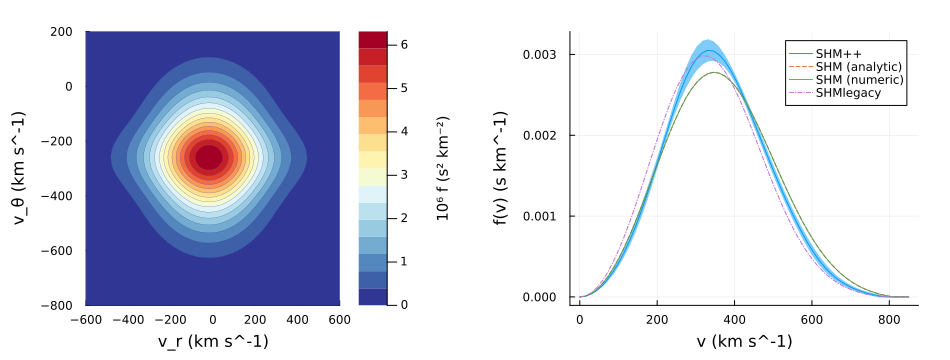
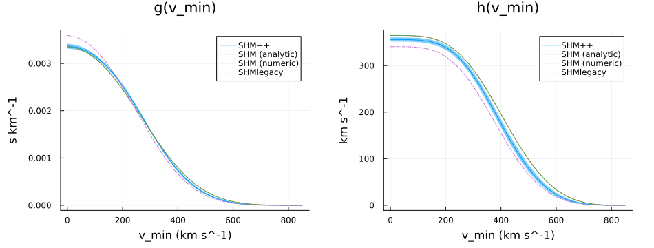
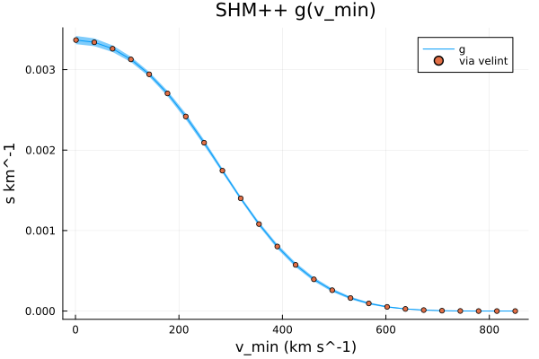

Velocity Distribution Integrals
StandardHaloModelsPP.jl provides a variety of utilities for integrals of the lab-frame distribution; its marginals, the mean speed and mean reciprocal speed above a threshold, and integrals of general kernels against it. They are computed in closed form where one exists, and otherwise with Integrals.jl. See also the Performance Tips.
By default these integrals evaluate the central values of the model's parameters, even for a model carrying Measurements such as SHMpp. Pass uncertainty = true to propagate them instead. That is as much as 10-130x slower, since Measurements.jl tracks derivatives through every evaluation of the integrand.
Dual numbers (e.g. ForwardDiff.jl) would give the result and its gradient in one integration, with the escape-boundary terms still added separately. Monte Carlo over an EnsembleProblem of sampled models (e.g. MonteCarloMeasurements.jl) would give the full distribution, where first order is poor (e.g. $v_\text{min}$ near vmaxlab).
Marginalized Distributions
The lab-frame distribution marginalized over $v_z \equiv v_\phi$ (the planar distribution) and over solid angle (the speed distribution). For $\eta = 0$ models the speed distribution has a closed form [16, Eq. (I.55)], used by default:
StandardHaloModelsPP.fχplanar — Method
fχplanar([m::HaloModel = SHM,] [t::TimeLike = T0,] vr::Unitful.Velocity, vθ::Unitful.Velocity; uncertainty = false, alg = QuadGKJL(), reltol = 1e-6, abstol = 0, kwargs...)The galactic-planar velocity distribution, marginalized over $v_z \sim v_\phi$:
\[f_{\chi,\text{lab}}^{\text{planar}}(v_r, v_\theta) = \int f_{\chi,\text{lab}}(\mathbf{v})\, dv_z\]
abstol defaults to 0, a purely relative tolerance. It may be a Quantity in the units of the result; a plain number is taken in the integrand's internal (unit-stripped) units. Further kwargs are passed to Integrals.jl's solve.
By default the central values of m's parameters (and of the ephemeris) are integrated. Pass uncertainty = true to propagate a Measurement model's uncertainties (typically 10-130x slower due to derivative tracking/propagation).
See also fχspeed for the marginalization over solid angle.
StandardHaloModelsPP.fχspeed — Method
fχspeed(m::HaloModel, t::TimeLike; uncertainty = false, analytic = true, alg = HCubatureJL(), reltol = 1e-4, abstol = 0, kwargs...) -> v -> fχspeed(m, t, v)
fχspeed([m::HaloModel = SHM,] [t::TimeLike = T0,] v::Unitful.Velocity; uncertainty = false, analytic = true, alg = HCubatureJL(), reltol = 1e-4, abstol = 0, kwargs...)Marginalized speed distribution, integrated over solid angle:
\[f_{\chi,\text{lab}}^{\text{speed}}(v) = v^2\int f_{\chi,\text{lab}}(\mathbf{v})\, d\Omega\]
normalized so $\int f\,dv = 1$.
When $\eta = 0$ and the Earth is inside the escape sphere ($V_E < v_\text{esc}$, true of all preset models) an exact analytic form [16, Sec. I.4] is used; pass analytic=false to force numerical integration. abstol defaults to 0, a purely relative tolerance. It may be a Quantity in the units of the result; a plain number is taken in the integrand's internal (unit-stripped) units. Further kwargs are passed to Integrals.jl's solve.
By default the central values of m's parameters (and of the ephemeris) are integrated. Pass uncertainty = true to propagate a Measurement model's uncertainties (typically 10-130x slower due to derivative tracking/propagation).
The two-argument form fχspeed(m, t) returns the distribution at t as a callable v -> fχspeed(m, t, v), with the lab frame, normalizations and the analytic-or-numerical choice fixed. Use it to evaluate repeatedly, e.g. inside your own integrand. It does not warn on non-convergence per evaluation (check caller's outer integral instead).
See also fχplanar for the marginalization over $v_z$.
These recreate plots akin to [5, Fig. 1], at T0. The paper's SHM is SHMlegacy here, and its SHM++ band spans $\eta$, while the ribbon here propagates all of SHMpp's uncertainties:
using Plots, NaturallyUnitful, StandardHaloModelsPP
using Measurements: value, uncertainty
# Marginalized planar velocity distribution
vrrange = LinRange(-600, 600, 72)u"km/s"
vθrange = LinRange(-800, 200, 60)u"km/s"
# (the colorbar needs plain numbers, so scale and unit-strip by-hand)
z = [1e6 * ustrip(u"s^2/km^2", fχplanar(SHMpp, vr, vθ)) for vθ in vθrange, vr in vrrange]
p1 = contourf(vrrange, vθrange, z; color = cgrad(:RdYlBu, rev = true), lw = 0.2,
xlabel = "v_r", ylabel = "v_θ", colorbar_title = "10⁶ f (s² km⁻²)")
# Speed distribution, with its uncertainty as a ribbon (Unitful values give axis units)
vrange = LinRange(0, 850, 60)u"km/s"
y = fχspeed.(SHMpp, vrange; uncertainty = true)
p2 = plot(vrange, value.(y); ribbon = uncertainty.(y), label = "SHM++",
xlabel = "v", ylabel = "f(v)")
plot!(p2, vrange, fχspeed.(SHM, vrange); label = "SHM (analytic)", ls = :dash)
plot!(p2, vrange, fχspeed.(SHM, vrange; analytic = false); label = "SHM (numeric)", ls = :dot)
plot!(p2, vrange, fχspeed.(SHMlegacy, vrange); label = "SHMlegacy", ls = :dashdot)
plot(p1, p2; layout = 2, size = (950, 360), margin = 6Plots.mm)
Mean Speed and Reciprocal
The mean reciprocal speed $g$ (elsewhere often $\eta(v_\text{min})$) and the mean speed $h$ above a threshold $v_\text{min}$ are the halo integrals of velocity-independent and velocity-dependent scattering rates [16]. For $\eta = 0$ models they have closed forms [16, Eqs. (I.60, I.63)], used by default:
StandardHaloModelsPP.g — Method
g([m::HaloModel = SHM,] [t::TimeLike = T0,] vmin::Unitful.Velocity; uncertainty = false, analytic = true, alg = HCubatureJL(), reltol = 1e-4, abstol = 0, kwargs...)
g(m::HaloModel, t::TimeLike; uncertainty = false, analytic = true, alg = HCubatureJL(), reltol = 1e-4, abstol = 0, kwargs...) -> vmin -> g(m, t, vmin)The mean reciprocal speed $g(v_\text{min}, t) = \int_{v>v_\text{min}} \frac{f_{\chi,\text{lab}}(\mathbf{v})}{v}\,d^3v$.
When $\eta = 0$ and the Earth is inside the escape sphere ($V_E < v_\text{esc}$, true of all preset models) an exact analytic form [16, Sec. I.4] is used; pass analytic=false to force numerical integration. abstol defaults to 0, a purely relative tolerance. It may be a Quantity in the units of the result; a plain number is taken in the integrand's internal (unit-stripped) units. Further kwargs are passed to Integrals.jl's solve.
By default the central values of m's parameters (and of the ephemeris) are integrated. Pass uncertainty = true to propagate a Measurement model's uncertainties (typically 10-130x slower due to derivative tracking/propagation).
The two-argument form g(m, t) returns the integral at t as a callable vmin -> g(m, t, vmin) (taking the same keywords), with the analytic-or-numerical choice fixed and, on the analytic path, the Earth's speed and the normalization computed once. Use it to evaluate many $v_\text{min}$ at one time, e.g. across a recoil-energy spectrum.
StandardHaloModelsPP.h — Method
h([m::HaloModel = SHM,] [t::TimeLike = T0,] vmin::Unitful.Velocity; uncertainty = false, analytic = true, alg = HCubatureJL(), reltol = 1e-4, abstol = 0, kwargs...)
h(m::HaloModel, t::TimeLike; uncertainty = false, analytic = true, alg = HCubatureJL(), reltol = 1e-4, abstol = 0, kwargs...) -> vmin -> h(m, t, vmin)The mean speed $h(v_\text{min}, t) = \int_{v>v_\text{min}} v\, f_{\chi,\text{lab}}(\mathbf{v})\,d^3v$.
When $\eta = 0$ and the Earth is inside the escape sphere ($V_E < v_\text{esc}$, true of all preset models) an exact analytic form [16, Sec. I.4] is used; pass analytic=false to force numerical integration. abstol defaults to 0, a purely relative tolerance. It may be a Quantity in the units of the result; a plain number is taken in the integrand's internal (unit-stripped) units. Further kwargs are passed to Integrals.jl's solve.
By default the central values of m's parameters (and of the ephemeris) are integrated. Pass uncertainty = true to propagate a Measurement model's uncertainties (typically 10-130x slower due to derivative tracking/propagation).
The two-argument form h(m, t) returns the integral at t as a callable vmin -> h(m, t, vmin) (taking the same keywords), with the analytic-or-numerical choice fixed and, on the analytic path, the Earth's speed and the normalization computed once. Use it to evaluate many $v_\text{min}$ at one time, e.g. across a recoil-energy spectrum.
For the presets:
using Plots, NaturallyUnitful, StandardHaloModelsPP
using Measurements: value, uncertainty
vrange = LinRange(1, 850, 25)u"km/s"
y = g.(SHMpp, vrange; uncertainty = true)
p1 = plot(vrange, value.(y); ribbon = uncertainty.(y), label = "SHM++",
title = "g(v_min)", xlabel = "v_min")
plot!(p1, vrange, g.(SHM, vrange); label = "SHM (analytic)", ls = :dash)
plot!(p1, vrange, g.(SHM, vrange; analytic = false); label = "SHM (numeric)", ls = :dot)
plot!(p1, vrange, g.(SHMlegacy, vrange); label = "SHMlegacy", ls = :dashdot)
y = h.(SHMpp, vrange; uncertainty = true)
p2 = plot(vrange, value.(y); ribbon = uncertainty.(y), label = "SHM++",
title = "h(v_min)", xlabel = "v_min")
plot!(p2, vrange, h.(SHM, vrange); label = "SHM (analytic)", ls = :dash)
plot!(p2, vrange, h.(SHM, vrange; analytic = false); label = "SHM (numeric)", ls = :dot)
plot!(p2, vrange, h.(SHMlegacy, vrange); label = "SHMlegacy", ls = :dashdot)
plot(p1, p2; layout = 2, size = (950, 360), margin = 6Plots.mm)
Arbitrary Convolutions
velint integrates a kernel against the full 3-D lab-frame distribution, and speedint a scalar kernel against the speed distribution. A kernel may be any callable taking (v, p) or just (v). Both return the integral itself; for control over the algorithm and error estimate, or for sweeps, use the Integration Problems they are built on. For which to use, see Performance Tips.
StandardHaloModelsPP.velint — Method
velint([m::HaloModel = SHM,] [t::TimeLike = T0,] kk; uncertainty = false, vmin = 0u"km/s", p = (), alg = HCubatureJL(), reltol = 1e-4, abstol = 0.0, kwargs...)Arbitrary convolution $\int_{v>v_\text{min}} f_{\chi,\text{lab}}(\mathbf{v})\, k(\mathbf{v},p)\,d^3v$ of a kernel kk(v, p) (or kk(v)) with the lab-frame velocity distribution: solve(HaloIntegralProblem(m, t, kk; ...), alg; ...).u. See HaloIntegralProblem for the problem itself, e.g. to choose an algorithm, inspect the error estimate or sweep t.
abstol defaults to 0, a purely relative tolerance. It may be a Quantity in the units of the result; a plain number is taken in the integrand's internal (unit-stripped) units. Further kwargs are passed to Integrals.jl's solve.
By default the central values of m's parameters (and of the ephemeris) are integrated. Pass uncertainty = true to propagate a Measurement model's uncertainties (typically 10-130x slower due to derivative tracking/propagation).
See also speedint, which convolves against the marginalized speed distribution.
StandardHaloModelsPP.speedint — Method
speedint([m::HaloModel = SHM,] [t::TimeLike = T0,] kk; uncertainty = false, vmin = 0u"km/s", vmax = nothing, p = (), alg = QuadGKJL(), reltol = 1e-6, abstol = 0.0, analytic = true, inneralg = HCubatureJL(), innerreltol = reltol / 10, innerabstol = abstol isa Quantity ? 0.0 : abstol / 10, kwargs...)Convolution $\int k(v,p)\,f_{\chi,\text{lab}}^{\text{speed}}(v)\,dv$ of a scalar kernel kk(v, p) (or kk(v)) with the marginalized speed distribution: solve(HaloIntegralProblem(m, t, kk; measure = :speed, ...), alg; ...).u. See HaloIntegralProblem for the problem itself.
abstol defaults to 0, a purely relative tolerance, as for velint. It may be a Quantity in the units of the result; a plain number is interpreted as being in the integrand's internal stripped units. The default innerabstol is a tenth of a plain-number abstol, and 0 for a Quantity one, since the inner integral has different units; with the default abstol it is 0, so the inner quadrature is controlled by innerreltol alone. Pass innerabstol explicitly, as a number or a Quantity in the units of fχspeed, to override. Further kwargs are passed to the outer Integrals.jl solve.
By default the central values of m's parameters (and of the ephemeris) are integrated. Pass uncertainty = true to propagate a Measurement model's uncertainties (typically 10-130x slower due to derivative tracking/propagation).
See also velint, which convolves against the full 3-D velocity distribution.
For example, $g$ is velint with the kernel $1/|\mathbf{v}|$. The two agree, here for the SHM++, where g is itself numerical:
using Plots, NaturallyUnitful, LinearAlgebra, StandardHaloModelsPP
using Measurements: value, uncertainty
gg(m, vmin) = velint(m, v -> 1 / norm(v); vmin)
vrange = LinRange(1, 850, 25)u"km/s"
y, yy = g.(SHMpp, vrange; uncertainty = true), gg.(SHMpp, vrange)
p = plot(vrange, value.(y); ribbon = uncertainty.(y), label = "g", title = "SHM++ g(v_min)",
xlabel = "v_min")
scatter!(p, vrange, yy; label = "via velint", markersize = 3)
Integration Problems
velint and speedint wrap a HaloIntegralProblem: an Integrals.jl IntegralProblem for the integral, with units handled for you. Use the problem directly to choose an algorithm, inspect the error estimate or return code, or remake it with a parameter changed. solve, remake and the SciML ensemble types (EnsembleProblem, EnsembleSerial, EnsembleThreads, EnsembleDistributed) are re-exported.
StandardHaloModelsPP.HaloIntegralProblem — Type
HaloIntegralProblem([m::HaloModel = SHM,] [t::TimeLike = T0,] kk; measure = :velocity, uncertainty = false, kwargs...)An integral problem with a kernel kk against the lab-frame velocity distribution of m at time t, set up for Integrals.jl. The kernel kk may be any callable (a function, or a callable object) taking (v, p) or just (v): with the default p = () it is called as kk(v) if it has a method for that (so norm or inv ∘ norm work), otherwise as kk(v, ()); with a p, as kk(v, p) if it has a method for that, otherwise as kk(v). solve it with any Integrals.jl algorithm:
using LinearAlgebra: norm
using Integrals: HCubatureJL
using Dates: DateTime, Day
prob = HaloIntegralProblem(SHM, v -> 1 / norm(v); vmin = 300u"km/s")
sol = solve(prob)
sol = solve(prob, HCubatureJL(); reltol = 1e-6, maxiters = 10^6)
sol.u # integral solution with units
remake(prob; t = T0 + Day(90)) # integral at another timeMeasures
measure = :velocity: $\int_{v>v_\text{min}} f_{\chi,\text{lab}}(\mathbf{v})\, k(\mathbf{v}, p)\,d^3v$, withkk(v::AbstractVector, p). Keywords:vmin,p. The problem is 3D over rescaled spherical coordinates $(s, w, \alpha) \in [0,1] \times [0,1] \times [0,2\pi]$, polar about the Earth's velocity, spanning exactly the distribution's support above $v_\text{min}$: the escape-speed boundary is the domain boundary, and near $v_\text{max}$ the domain shrinks onto the small cap of directions that still reach it; default algorithmHCubatureJL(),reltol = 1e-4,abstol = 0. Seevelint.measure = :speed: $\int_{v_\text{min}}^{v_\text{max}} k(v, p)\, f_{\chi,\text{lab}}^{\text{speed}}(v)\,dv$, withkk(v::Unitful.Velocity, p). Keywords:vmin,vmax(default $v_\text{esc} + V_E$),p,analytic, and the inner angular quadrature'sinneralg,innerreltol(1e-7),innerabstol(0). The problem is 1D over $v$; the inner integral,fχspeed, is fixed at construction, and is analytic when $\eta = 0$ and $V_E < v_\text{esc}$. Default algorithmQuadGKJL(),reltol = 1e-6,abstol = 0. Seespeedint.
Solving
solve(prob[, alg]; reltol, abstol, kwargs...) returns a HaloIntegralSolution; further kwargs go to Integrals.jl's solve. abstol may be a Quantity in the units of the result; a plain number is taken in the integrand's internal (unit-stripped) units. remake(prob; kwargs...) rebuilds the problem with any constructor argument changed (m, t, kernel, measure, uncertainty, or the measure's keywords), at a few percent of the cost of a solve.
Sweeps
A sweep is a SciML EnsembleProblem whose prob_func remakes the problem per point; it returns an EnsembleSolution of HaloIntegralSolutions, and runs on threads with EnsembleThreads() (start Julia with -t auto):
ts = [DateTime(2020, 1, 1) + Day(d) for d in 0:364]
ens = EnsembleProblem(prob; prob_func = (p, ctx) -> remake(p; t = ts[ctx.sim_id]))
sols = solve(ens, nothing, EnsembleThreads(); trajectories = length(ts))Pass nothing as the algorithm for the problem's default. Kernel parameters sweep the same way, e.g. remake(p; p = Es[ctx.sim_id]) for a kernel kk(v, p).
Uncertainties
By default only the central values of m's parameters (and of the ephemeris) are integrated. uncertainty = true additionally propagates a Measurement model's uncertainties. That is typically 10-130x slower, and only works with pure-Julia algorithms (e.g. QuadGKJL, HCubatureJL): C-backed ones (Cuba, Cubature) need plain floating-point integrands. The defaults measure error on central values (norm = value ∘ norm); a user-supplied adaptive algorithm without that norm still works, but possibly more slowly.
StandardHaloModelsPP.HaloIntegralSolution — Type
HaloIntegralSolutionThe result of solve-ing a HaloIntegralProblem.
u: the integral, with units.resid: the solver's error estimate, in the same units, ornothingif the algorithm does not provide one.retcode: the SciML return code; checked bySciMLBase.successful_retcode(sol).sol: the underlying (unit-free) Integrals.jl solution.
Sweeps
A sweep over time, $v_\text{min}$, kernel parameters or models is a SciML EnsembleProblem whose prob_func remakes the problem for each point. Rebuilding costs about 3% of a solve, and the result is an EnsembleSolution of HaloIntegralSolutions. With EnsembleThreads() the points are solved in parallel (start Julia with e.g. -t auto):
using Dates
ts = [DateTime(2020, 1, 1) + Day(d) for d in 0:364] # annual modulation
ens = EnsembleProblem(prob; prob_func = (p, ctx) -> remake(p; t = ts[ctx.sim_id]))
sols = solve(ens, nothing, EnsembleThreads(); trajectories = length(ts))
[s.u for s in sols]Passing nothing as the algorithm uses the problem's default.
Building Your Own Integrals
To integrate against the halo in your own IntegralProblem (e.g. jointly with a recoil energy), use the distributions frozen at a time, which fix the lab frame and normalizations once and evaluate cheaply: fχspeed(m, t) for the speed distribution (analytic where possible, and quiet inside an integrand) and fχlab(m, t) for the full velocity distribution. vmaxlab gives the largest lab-frame speed with support, and vE(m, t) / VE(m, t) the model's Earth velocity and speed.
StandardHaloModelsPP.vmaxlab — Function
vmaxlab([m::HaloModel = SHM,] [t::TimeLike = T0])The largest lab-frame speed at which m's distribution is nonzero at time t: $v_\text{esc} + V_E(t)$. For $v_\text{esc} = \infty$ (e.g. SHMnoesc) the escape speed is the effective cutoff $6 v_0$ (beyond which the Maxwellian is below $e^{-36}$).
Like the pointwise distributions a model m with uncertainties returns a Measurement (with the ephemeris' uncertainties included, see VE); use value(vmaxlab(m, t)) for a plain integration limit.